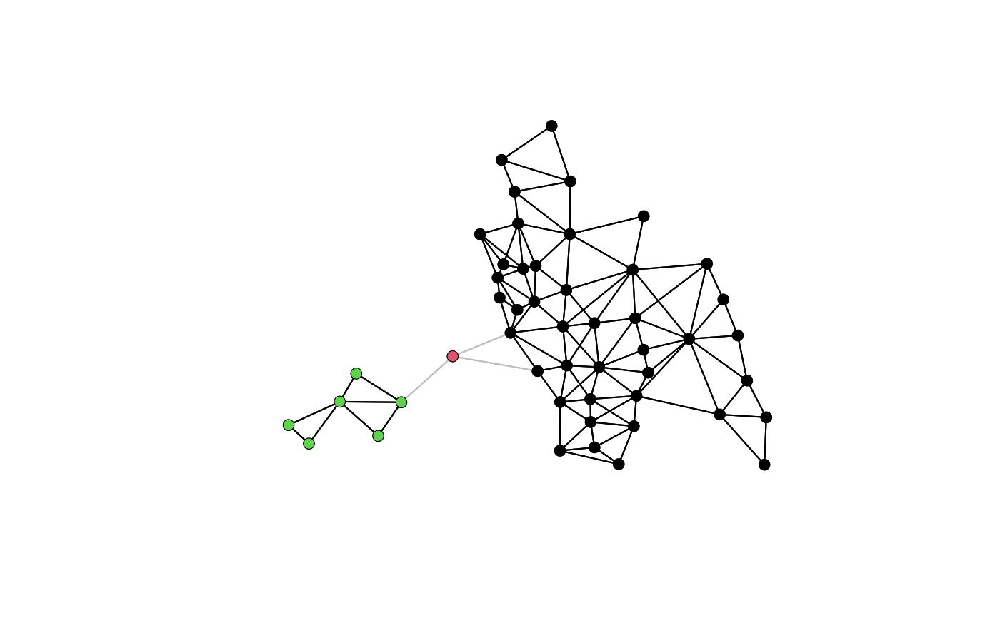

Depth First Search on Neighbor Lists
compon.Rdn.comp.nb() finds the number of disjoint connected subgraphs in the graph depicted by nb.obj - a spatial neighbours list object.
Details
If attr(nb.obj, "sym") is FALSE and igraph::components is available, the components of the directed graph will be found by a simple breadth-first search; if igraph::components is not available, the object will be made symmetric (which may be time-consuming with large numbers of neighbours) and the components found by depth-first search. If attr(nb.obj, "sym") is TRUE, the components of the directed graph will be found by depth-first search. The time complexity of algorithms used in native code and through igraph::components is linear in the sum of the number of nodes and the number of edges in the graph, see https://github.com/r-spatial/spdep/issues/160 for details; very dense neighbour objects will have large numbers of edges.
Value
A list of:
- nc
number of disjoint connected subgraphs
- comp.id
vector with the indices of the disjoint connected subgraphs that the nodes in
nb.objbelong to
Author
Nicholas Lewin-Koh nikko@hailmail.net
Examples
columbus <- st_read(system.file("shapes/columbus.gpkg", package="spData")[1], quiet=TRUE)
col.gal.nb <- read.gal(system.file("weights/columbus.gal", package="spData")[1])
coords <- st_coordinates(st_centroid(st_geometry(columbus)))
plot(col.gal.nb, coords, col="grey")
col2 <- droplinks(col.gal.nb, 21)
#> Warning: some observations have no neighbours
#> Warning: neighbour object has 3 sub-graphs
res <- n.comp.nb(col2)
table(res$comp.id)
#>
#> 1 2 3
#> 42 1 6
plot(col2, coords, add=TRUE)
points(coords, col=res$comp.id, pch=16)

run <- FALSE
if (require("igraph", quietly=TRUE) && require("spatialreg", quietly=TRUE)) run <- TRUE
#>
#> Attaching package: ‘igraph’
#> The following objects are masked from ‘package:stats’:
#>
#> decompose, spectrum
#> The following object is masked from ‘package:base’:
#>
#> union
#>
#> Attaching package: ‘spatialreg’
#> The following objects are masked from ‘package:spdep’:
#>
#> get.ClusterOption, get.VerboseOption, get.ZeroPolicyOption,
#> get.coresOption, get.mcOption, set.ClusterOption,
#> set.VerboseOption, set.ZeroPolicyOption, set.coresOption,
#> set.mcOption
if (run) {
B <- as(nb2listw(col2, style="B", zero.policy=TRUE), "CsparseMatrix")
g1 <- graph_from_adjacency_matrix(B, mode="undirected")
c1 <- components(g1)
print(c1$no == res$nc)
}
#> [1] TRUE
if (run) {
print(all.equal(c1$membership, res$comp.id))
}
#> [1] "names for target but not for current"
if (run) {
print(all.equal(c1$csize, c(table(res$comp.id)), check.attributes=FALSE))
}
#> [1] TRUE
if (run) {
W <- as(nb2listw(col2, style="W", zero.policy=TRUE), "CsparseMatrix")
g1W <- graph_from_adjacency_matrix(W, mode="directed", weighted="W")
c1W <- components(g1W, mode="weak")
print(all.equal(c1W$membership, res$comp.id, check.attributes=FALSE))
}
#> [1] TRUE
# \donttest{
if (run) {
data(house, package="spData")
house <- sf::st_as_sf(house)
k6 <- knn2nb(knearneigh(house, k=6))
is.symmetric.nb(k6)
}
#> [1] FALSE
if (run) {
print(k6)
}
#> Neighbour list object:
#> Number of regions: 25357
#> Number of nonzero links: 152142
#> Percentage nonzero weights: 0.02366211
#> Average number of links: 6
#> Non-symmetric neighbours list
if (run) {
length(k6) + sum(card(k6))
}
#> [1] 177499
if (run) {
# no pre-computed graph components
str(attr(k6, "ncomp"))
}
#> NULL
if (run) {
# raising the subgraph compute ceiling to above |N|+|E| computes and stores the
# object in the neighbour object
set.SubgraphCeiling(180000L)
k6 <- knn2nb(knearneigh(house, k=6))
str(attr(k6, "ncomp"))
}
#> Warning: neighbour object has 47 sub-graphs
#> List of 2
#> $ nc : num 47
#> $ comp.id: num [1:25357] 1 1 1 1 1 1 1 1 1 1 ...
if (run) {
print(k6)
}
#> Neighbour list object:
#> Number of regions: 25357
#> Number of nonzero links: 152142
#> Percentage nonzero weights: 0.02366211
#> Average number of links: 6
#> 47 disjoint connected subgraphs
#> Non-symmetric neighbours list
if (run) {
system.time(udir <- n.comp.nb(make.sym.nb(k6)))
}
#> user system elapsed
#> 4.185 0.000 4.212
if (run) {
system.time(dir <- n.comp.nb(k6))
}
#> user system elapsed
#> 1.424 0.000 1.432
if (run) {
udir$nc
}
#> [1] 47
if (run) {
dir$nc
}
#> [1] 47
if (run) {
all.equal(dir, udir)
}
#> [1] TRUE
# }